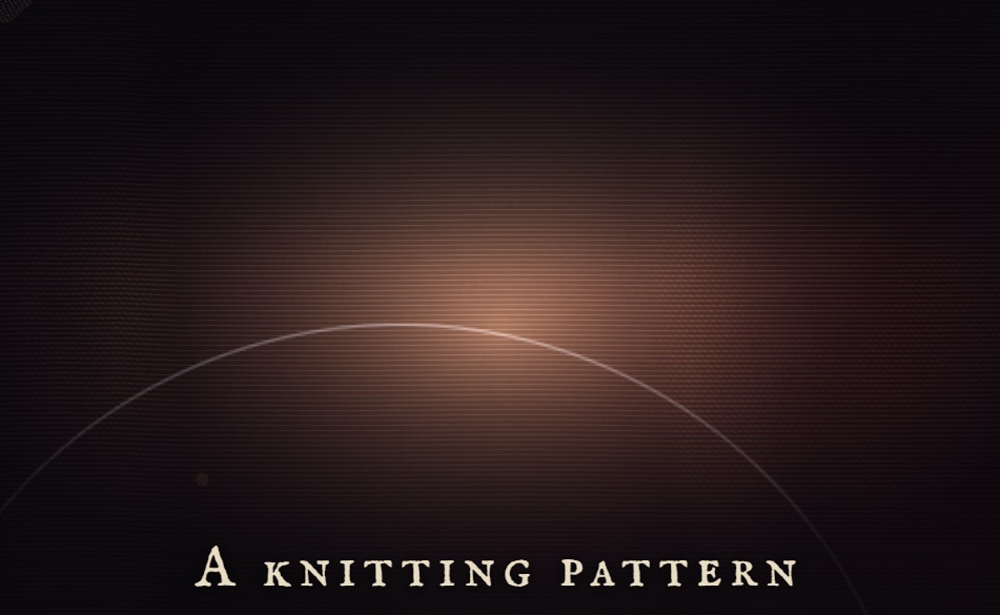
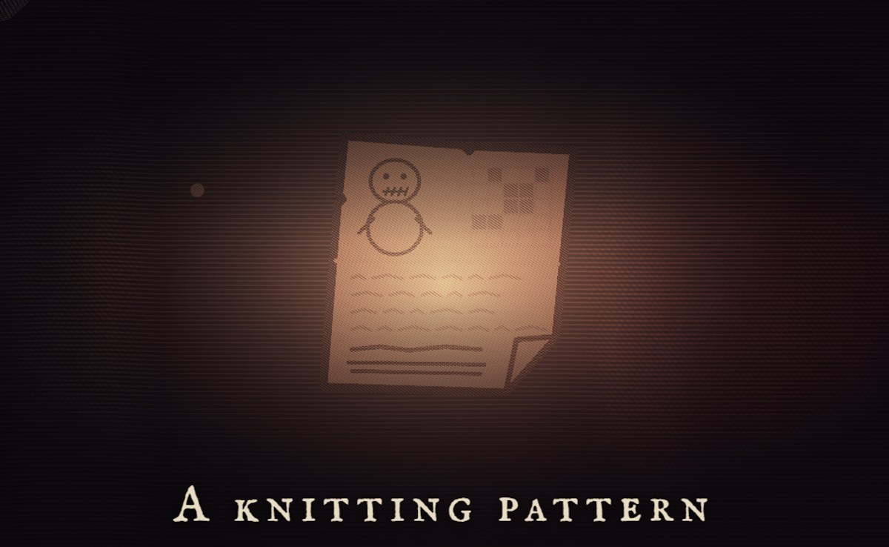
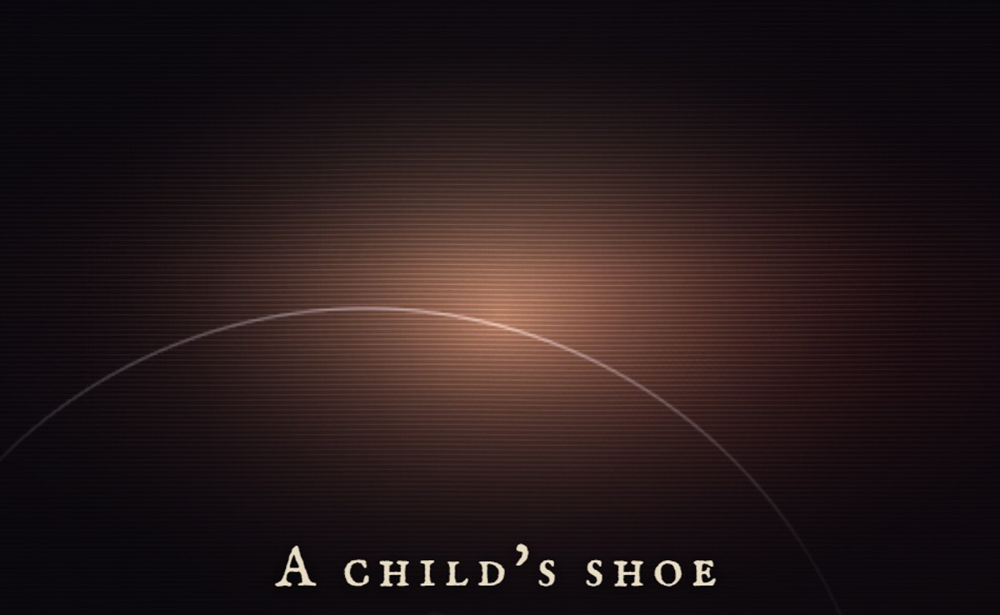
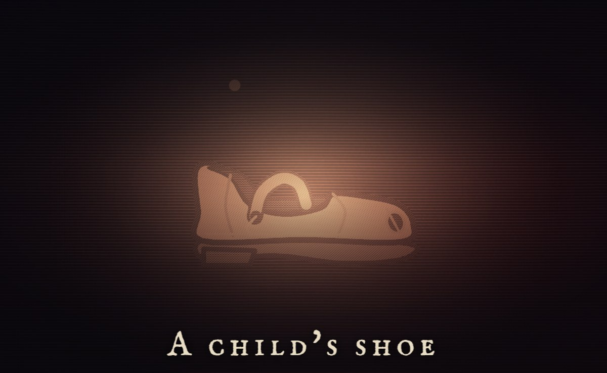
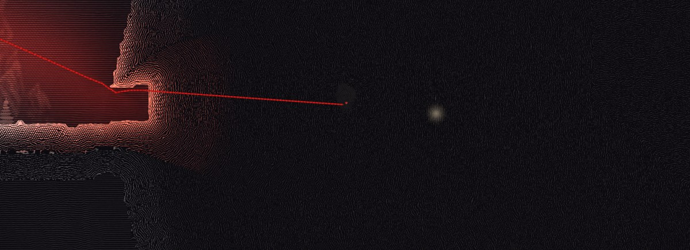
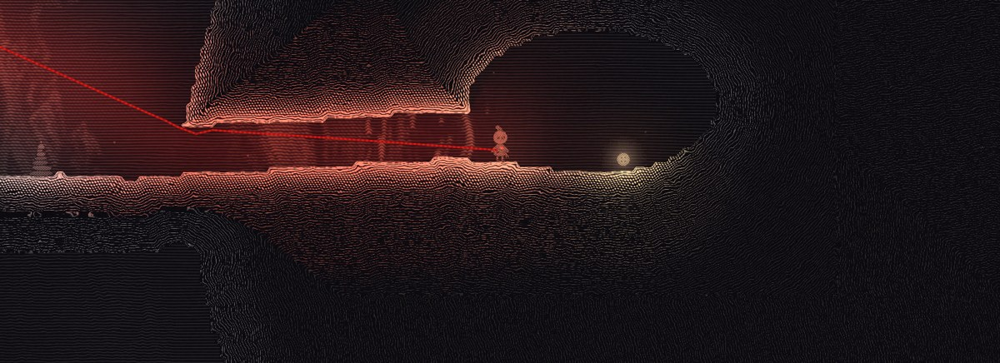
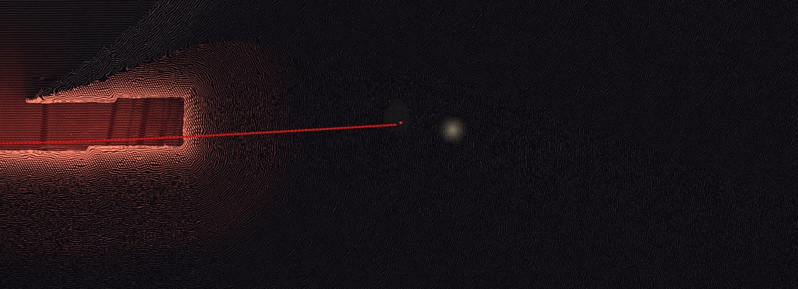
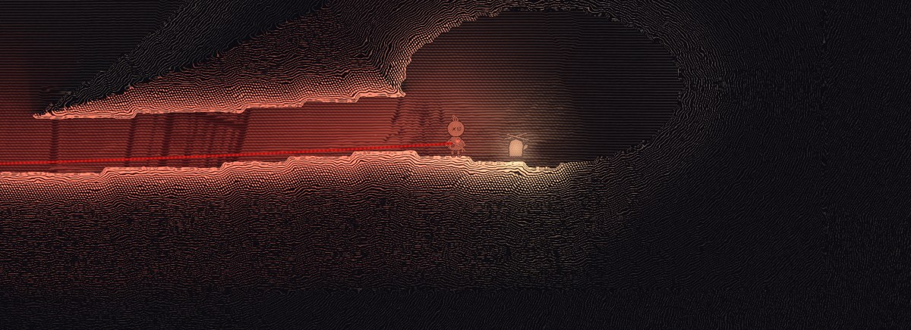

Two of the eight keepsakes had no picture at all, and the others were washed out to a white dot. Hidden rooms opened only once you were standing in them. Both are fixed. The sound now comes from where you are: the size of the cave, the rock in the way, what you walk on, and a lot of small things that happen on their own.
The missing things
also some of the collectible items are either completely missing or just not rendered. Please fix it.
Two keepsakes were never drawn. The ones in the two deepest hidden rooms, in the Hush and the Treadles, had words but no picture: you found a glow, and nothing rose into the light. Both are drawn now, in the room and held up.
All eight were hard to see. Each lay inside a glow stronger than itself, so in the room it was a white dot. The glow is a faint halo now, a small light falls on the thing, and it is a third larger.
A pale ring no longer crosses the picture. The flash of picking a keepsake up froze in front of it when time stopped.
The rest were checked. All five skeins and eleven knots are in open air. I picked up all eight keepsakes in the hidden test window and looked at each one held up.
The two new picturesTwo things you may not have found yet.


BeforeAfter
Drag the thread to compare


BeforeAfter
Drag the thread to compare
The rooms open first
And the hidden rooms should reveal earlier when I enter, otherwise item is shown before the room is revealed
The same two spots inside hidden rooms, before and after.


BeforeAfter
Drag the thread to compare


BeforeAfter
Drag the thread to compare
Earlier. The rock starts to crumble while you are still in the mouth of the crack, two to three metres before the part that was hidden. It runs ahead of you and takes 0.9 seconds instead of 1.5.
In order. The keepsake, its light and everything else in the room appear only when the rock over that spot has gone, and nothing can be picked up through rock.
Still secret. How close you are is measured by walking distance through the crack, so passing on the other side of a wall opens nothing, and no pole or stretch of the grey thread is close enough to open one. The room's name still comes when you step in.
Running in with the real controls
Rock starts to open
You reach the hidden part
Item can be seen
You reach the item
The Cellar
0.10 s
0.42 s
0.74 s
1.67 s
The Diggers' Cache
0.16 s
0.77 s
0.80 s
2.62 s
The Seed Hollow
0.47 s
0.82 s
1.14 s
1.87 s
The Ringer's Cell
0.24 s
0.85 s
0.93 s
2.13 s
The Sill
0.07 s
0.48 s
0.61 s
1.01 s
The Last Basket
0.40 s
0.94 s
0.96 s
2.18 s
The Quiet Room
0.56 s
1.15 s
1.18 s
2.39 s
The Shoe
0.37 s
0.94 s
0.99 s
1.86 s
The sound of the place
And add more detailed sound design to the game, it should be more responsive to the surrounding and more variable.
Until now every place rang the same. Ten times a second the game now feels out the cave around you, and nearly everything you hear passes through that. This is one footstep, recorded from the game in each place, until it had faded by 45 dB:
Where
Before
Now
The Brink, outdoors
1.4 s
0.4 s
A crawl in the rock
1.5 s
0.2 s
The Hush, between earth walls
1.5 s
1.2 s
The Throat, on a ledge
1.4 s
1.5 s
The Bell Gallery
1.5 s
3.6 s
The Ink Mere
1.5 s
3.7 s
Space. Four reverbs blend by the size of the cave, with separate echoes off the wall to your left and to your right. In a crawl the background and the music turn dull, and you hear yourself brush the rock.
Distance and rock. Far sounds lose their brightness. A sound behind rock comes through muffled, mostly as the cave's answer to it.
Your feet. Snow, stone, gravel, earth, dry leaves, wet rock, boards and wool, three to six recordings each, never the same one twice running. They follow your speed, and get lighter as your yarn runs out. Landings match the ground, and a hard one shakes dust off a low roof.
Edges. Near a drop you may kick a pebble over. It knocks on the way down and lands, or plops into the ink, after as long as the fall takes.
A pluck is answered. It comes back off the far walls, later the farther they are, and bells you have not woken yet stir quietly where they stand.
Things with a place. Flames, the ink lapping at its nearest edge, closed veils, lit bells, iron rings on chains: you can walk past them and hear which side they are on.
Things on their own. Each of the nine areas has its own: falling pebbles, insects and roots, far chains, bubbles and groaning under the ink, rocking chairs, trickling earth. They come at random times, distances and pitches, most of them from a real surface near you.
It notices you. Insects and chairs go quiet when you run, land hard or pluck, and come back. Stand still and the place comes closer.
Air. Wind past you in a long fall or a fast swing. Looking over a deep drop, the pit's moan rises.
Beds and music. The background layers drift on slow tides. In the caves a piece of music plays once, then the place is left alone for about a minute before it comes back.
Death and found things. When you die, or hold something up, the world goes under as if through water.
Kept to what you asked before: none of the new sounds is thread or rope, and nothing is brass. One recording of leaning trees was dropped because it ticked like a tightening rope. The finale's own silences are untouched.
How it was checked
The 119 new sound files were levelled, and samples of them looked at as spectrograms. The game's own output was recorded in ten places, old build against new: the overall loudness is about the same, and a pluck is slightly softer. Three minutes were simulated in every area to see how often things happen. Both endings were started again in the hidden test window without errors. I can't hear any of it, so tell me what is too loud, too frequent or wrong.
Where it lives
app/src/sound.jsNew. The cave's acoustics, the ground, the edges, and LIFE: what happens on its own, one line each.